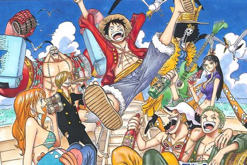

El manga es una forma de arte japonés que ha arrasado en todo el mundo. Es una forma de cómic y novela gráfica originaria de Japón. La palabra manga proviene de dos palabras japonesas: "man", que significa "caprichoso o improvisado", y "ga", que se traduce como "dibujos".
Es un tipo de historieta originario de Japón que se caracteriza por tener un estilo gráfico muy distintivo y una narrativa que combina elementos de la cultura japonesa y la occidental. El estilo visual único del manga y su capacidad para contar historias de una manera artísticamente sofisticada lo convirtieron en una de las formas más populares de narración de hoy en día. En Japón, el término manga se refiere tanto a los cómics como a los dibujos animados. Sin embargo, fuera de Japón, se refiere ampliamente a los cómics publicados originalmente en Japón.
Las historias de manga suelen estar escritas en blanco y negro, lo que facilita a los lectores procesar la cantidad de contenido sin distracciones. Sin embargo, existen algunas ediciones especiales a todo color.
El manga suele publicarse en capítulos semanales o mensuales que luego aparecen por entregas en grandes revistas de manga. Colectivamente, estos capítulos de manga se publican juntos como volúmenes tankōbon, a menudo libros de tapa blanda que se pueden comprar en librerías o tiendas de manga.
El estilo gráfico del cómic manga se distingue por su trazo preciso, sus ojos grandes y expresivos, y su uso de las líneas y las sombras para crear efectos dramáticos. Además, el cómic manga suele tener un ritmo de lectura rápido, con viñetas pequeñas que permiten al lector avanzar rápidamente por la historia.
El manga está estrechamente relacionado con la cultura y la sociedad japonesas y abarca una amplia gama de temas, como romance, deportes, ciencia ficción, fantasía, terror y mucho más. El manga se dirigía principalmente al público japonés. Sin embargo, se ha vuelto cada vez más popular en los países occidentales debido a su estilo artístico único y sus cautivadoras historias. Ha seguido evolucionando, incorporando nuevos temas e ideas, lo que permite a los lectores de manga explorar los diversos aspectos de la cultura japonesa.

|
|
|
|
|
|